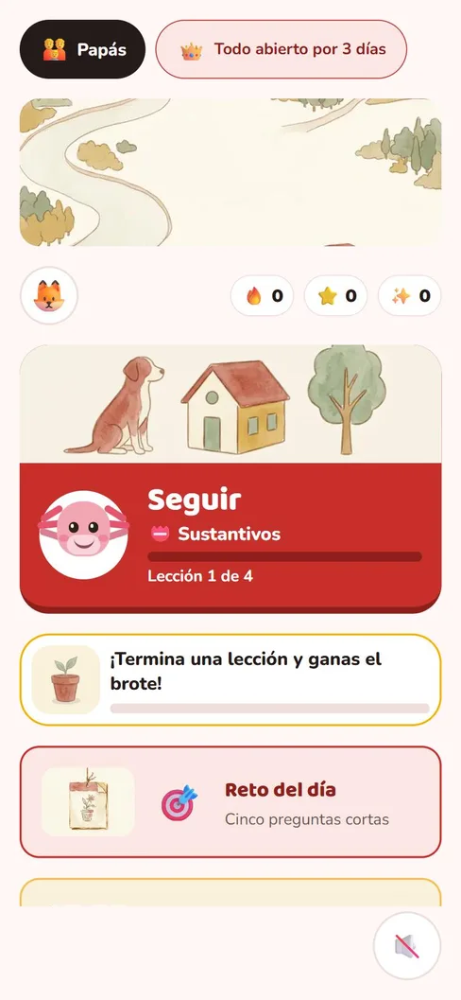
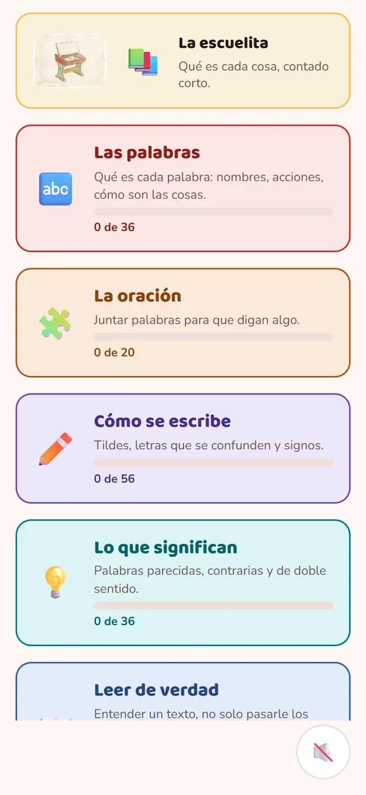
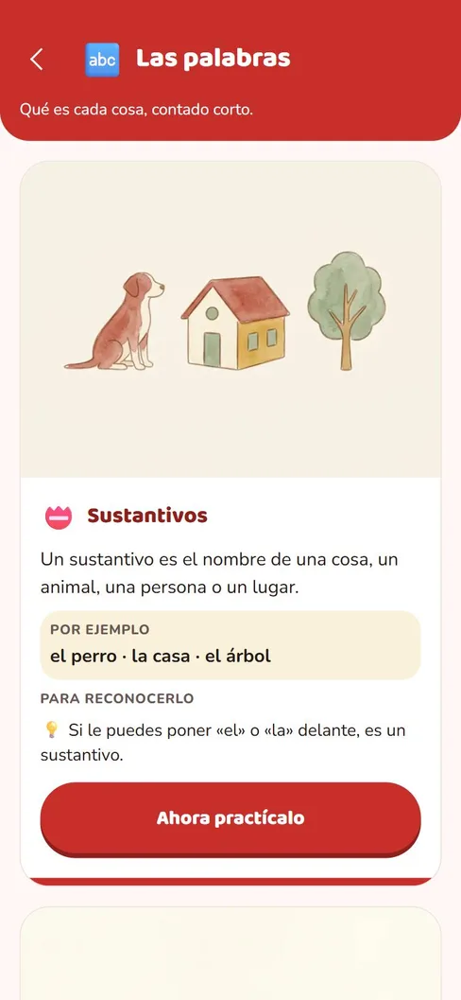
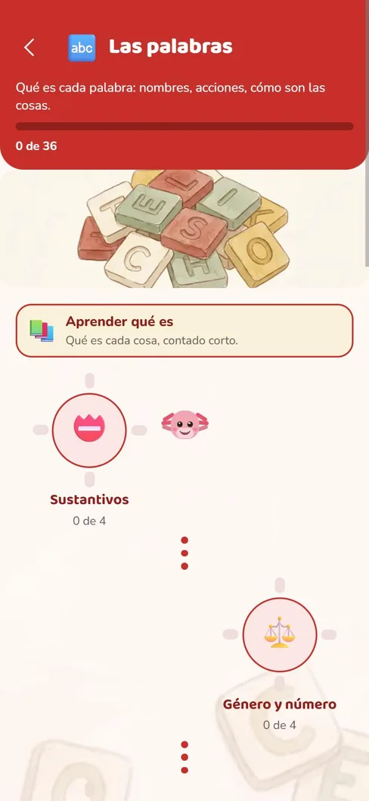
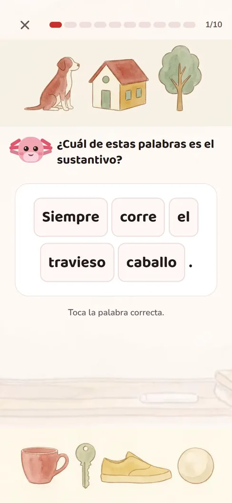
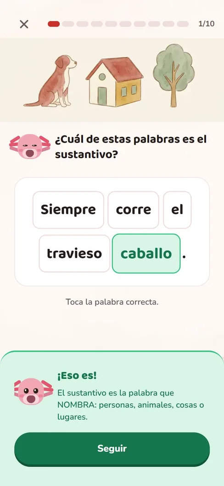
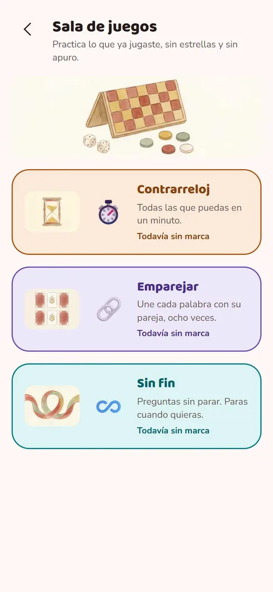
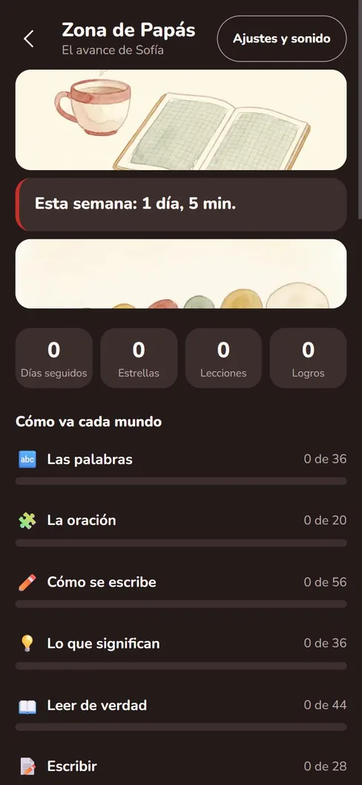

Qué aprende
Casi todas se quedan en la ortografía.
Buscar «lenguaje» en la tienda devuelve tildes y palabras con b o con v. Eso acá es un mundo de seis. Los otros cinco son de qué es cada palabra, cómo se arma una oración, qué significan, cómo se entiende un texto de verdad y cómo se escribe uno. El orden no es alfabético ni cómodo: va de la palabra suelta al texto completo, que es como lo ordenan los currículos de Chile, México, Colombia y España.
-
Las palabras9 temas · 36 leccionesSustantivosGénero y númeroAdjetivosArtículosPronombresEl verboLos tres tiemposAdverbiosPreposiciones y nexos
-
La oración5 temas · 20 leccionesOrden de la oraciónTipos de oraciónSujeto y predicadoConcordanciaConectores
-
Cómo se escribe14 temas · 56 leccionesMayúsculasSílabasDiptongo e hiatoAgudas, graves y esdrújulasTilde diacríticab / vg / jc / s / zLa h mudall / yr / rrm antes de p y bPunto y coma¿? y ¡!
-
Lo que significan9 temas · 36 leccionesSinónimosAntónimosPalabras con dos sentidosHomófonasFamilias de palabrasPrefijos y sufijosPalabras compuestasSentido figuradoUsar el diccionario
-
Leer de verdad11 temas · 44 leccionesComprensión literalQué pasó primeroVocabulario en contextoInferenciaCausa y efectoIdea principalPara qué se escribióTipos de textoHecho y opiniónArgumentaciónTablas y carteles
-
Escribir7 temas · 28 leccionesOrdenar palabrasOrdenar párrafosCompletar la oraciónEl conector que faltaEl signo que faltaCorregir la oraciónElegir el título
Por dentro
Así se ve.








Cómo enseña
Acertar sin saber por qué no sirve de nada.
Una app de lenguaje que solo marca bien o mal entrena a adivinar. Esta hace tres cosas distintas, y las tres están en las capturas de arriba.
-
La escuelita va antes
Cada tema empieza por qué es, contado corto, con ejemplos y un truco para reconocerlo —«si le puedes poner “el” o “la” delante, es un sustantivo»—. Recién después viene «ahora practícalo».
-
La explicación llega al acertar, no al fallar
Al responder bien aparece por qué era esa. Es el momento en que el niño está mirando, y no el castigo de haberse equivocado.
-
El error nunca es rojo
Aunque el rojo sea el color de esta app, equivocarse se pinta de ámbar y viene con la mascota, un icono y la explicación. El rojo de Palabu significa «seguir», nunca «mal».
Lo que casi nadie cubre
Entender un texto, no pasarle los ojos por encima.
«Leer de verdad» y «Escribir» son los dos últimos mundos porque necesitan todo lo anterior, y son los dos que la competencia no trae. Ahí están la idea principal, la inferencia, la causa y el efecto, para qué se escribió un texto, qué es un hecho y qué es una opinión, y cómo se pesa una razón. Después, escribir: ordenar, completar, arreglar lo que está mal escrito y elegir el título.
Para el papá o la mamá
Lo que no vas a encontrar.
-
Sin publicidad
Ninguna, en ninguna parte, ni siquiera de las otras apps nuestras dentro de la pantalla del niño. No hay identificador de publicidad.
-
Sin internet y sin cuenta
Funciona en modo avión y el avance se guarda en el teléfono. No pide correo, ni nombre de usuario, ni fecha de nacimiento. Sin micrófono, sin cámara y sin ubicación.
-
Sin compras del niño
En la pantalla del niño no aparece nunca un precio. Lo que se paga lo abre un adulto, detrás de una puerta que se cruza tocando dos veces el número mayor.
Lo que sí vas a encontrar
Sabes en qué mundo va flojo.
La Zona de Papás muestra cuánto usó esta semana y cómo va cada uno de los seis mundos, uno por uno — sin notas y sin comparaciones con nadie. Y el niño tiene a Tinta, que se cambia de color, y un rincón que se llena con lo que va ganando: es lo que lo trae de vuelta mañana.
Cuánto cuesta
Los tres primeros días, todo abierto.
Gratis para siempre
La primera lección de cada uno de los 55 temas, en los
seis mundos — para que un adulto decida mirando y no imaginando. Más el reto del día
y una tanda de repaso cada día.
Y al instalarla, los tres primeros días está todo
abierto: la app entera, sin pagar nada. Después, lo demás se abre una sola
vez y queda para siempre, desde la Zona de Papás y nunca desde la pantalla del niño.
Leer bien no es leer rápido.
Es saber qué dice cada palabra, cómo se juntan y qué queda cuando se juntan bien.
Todavía no está en Google Play Palabu está en revisión. Cuando Google abra su ficha, el botón de descarga va acá.